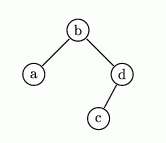

一棵二叉树要么为空，要么由一个结点和两棵与其相连的树组成。这两棵树分别称为左子树和右子树。每个结点处有一个英文字母。不包括在任何子树内的结点称为根结点。我们定义二叉搜索树(BST)为：若按字母表中的先后顺序排列，则二叉树的任一个结点均满足，其左子树上的所有字母均在该结点字母之前，而其右子树上所有字母均在该结点字母之后。
于是，一棵BST的代码为：
●如果是一棵空树，则代码中不包括任何字母，即为空串；
●如果不是空树，则代码为：根结点上的字母，紧跟着左子树的代码和右子树的代码。
一棵含k个结点的BST，其代码会有k个小写英文字母，按照字母顺序排列它所有可能的代码，并用(n,k)表示其中的第n条代码。
例如，一棵有4个结点的BST共有14个不同的代码，按字母顺序列出：abcd 、abdc、 acbd、 adbc、 adcb、 bacd、 badc、 cabd、 cbad、 dabc、 dacb、 dbac、 dcab、 dcba。
代码(7,4)：badc，对应的BST如下图所示。

任务：
编写一个程序，完成下列工作：
●读入n，k；
●找出代码(n,k)；
●把它写入